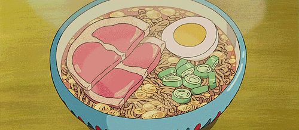
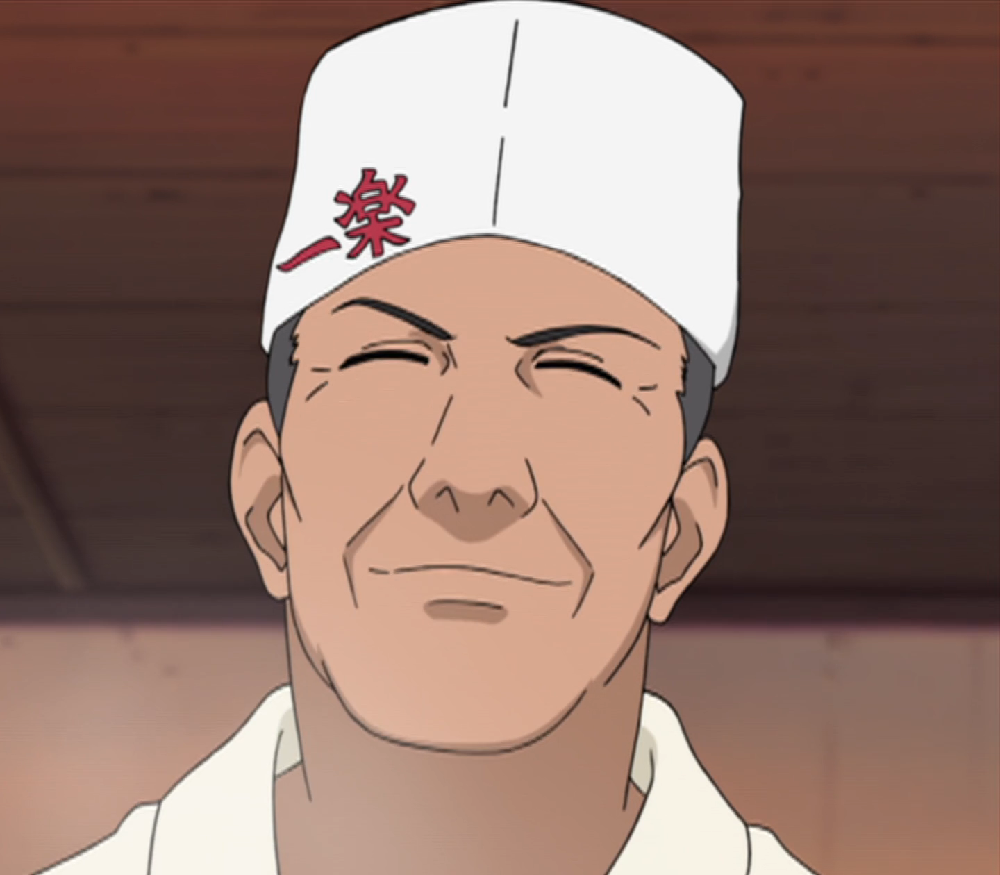

Home

Our History

Ramen Ichiraku was founded by Teuchi thirty-one years before the start of the series. Although it is quite small and has an unassuming appearance, Ramen Ichiraku has always been popular with Konoha's villagers because of Teuchi's strong commitment to taste, giving the ramen an almost artistic quality. Like any ramen establishment, Ramen Ichiraku offers various toppings, such as char siu, boiled eggs, narutomaki, menma and seaweed. In Konoha Hiden, seaweed had been the most popular topping for several years until, after the Fourth Shinobi World War, it was surpassed by naruto.